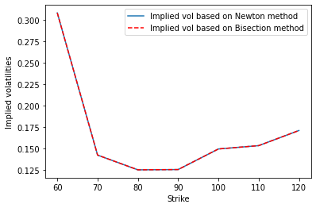

import numpy as np
import matplotlib.pyplot as plt
from scipy.stats import norm
import timeSolutions to Assignment 12
ME200, Johannes Ruf and Luitgard Veraart
Exercise 44
Let \[\begin{align*}
D_1 & = \frac{\log \left(\frac{S_t}{K} \right) + \left(r + \frac{\sigma^2}{2} \right)(T-t)}{\sigma \sqrt{T-t}}, &
D_2 &= D_1 - \sigma \sqrt{T-t}.
\end{align*}\] We show that
\[\begin{align*}
S_t \varphi (D_1) = K e^{-r(T - t)} \varphi(D_2),
\end{align*}\] where \(\varphi(x) = \frac{1}{\sqrt{2 \pi}} \exp(-\frac{x^2}{2})\).
Proof: To see that the statement is true, consider \[\begin{align*} \log\left( \frac{\varphi(D_1)}{ \varphi(D_2)}\right) & = \log\left(\frac{\frac{e^{-D_1^2/2}}{\sqrt{2 \pi}}}{\frac{e^{-D_2^2/2}}{\sqrt{2 \pi}}}\right) = \log(\exp(\frac{1}{2} (D_2^2 - D_1^2))) \\ & = \frac{1}{2} (D_2^2 - D_1^2) = \frac{1}{2} (D_2 - D_1)(D_2 + D_1)\\ &= \frac{1}{2} (- \sigma \sqrt{T - t}) (2 D_1 - \sigma \sqrt{T-t})\\ &= -D_1 \sigma \sqrt{T-t} + \frac{\sigma^2 (T-t)}{2}\\ &= -\log\left(\frac{S_t}{K}\right) - (r + \frac{\sigma^2}{2})(T-t) + \frac{\sigma^2 (T-t)}{2}\\ &= \log\left(\frac{K}{S_t}\right) - r (T-t). \end{align*}\] Then we take exponentials on both sides of the equation and obtain \[\begin{align*} \frac{\varphi(D_1)}{\varphi(D_2)} = \exp\left( \log\left(\frac{K}{S_t} \right) - r (T-t) \right) = \frac{K}{S_t} \exp(-r(T-t)) \end{align*}\] which is equivalent to \[\begin{align*} S_t \varphi(D_1) = Ke^{-r(T-t)} \varphi(D_2). \end{align*}\]
Exercise 45
#Function returning the price of European Call option in Black-Scholes model
def black_scholes_call(S, K, r, tau, sigma):
d1 = (np.log(S / K) + (r + 0.5 * sigma**2) * tau)/(sigma * np.sqrt(tau))
d2 = d1 - sigma * np.sqrt(tau)
tmp1 = S * norm.cdf(d1, loc=0, scale=1)
tmp2 = K * np.exp(-r * tau) * norm.cdf(d2, loc=0, scale=1)
price = tmp1 - tmp2
return price
myprice = black_scholes_call(S=50, K=50, r=0.05, tau=1.0, sigma=0.3)
print('Price of European call option is: {:.4f}'.format(myprice))Price of European call option is: 7.1156#Function computing implied volatilities using the Bisection method
def impliedvol_bisection(S, K, r, tau, marketprice, a, b, tolerance):
f_a = black_scholes_call(S, K, r, tau, a) - marketprice
f_b = black_scholes_call(S, K, r, tau, b) - marketprice
if f_a*f_b >= 0:
print("Choose new interval [a, b]!")
return
l_n = a
r_n = b
while (np.abs(r_n-l_n) > tolerance):
f_a = black_scholes_call(S, K, r, tau, l_n) - marketprice
f_b = black_scholes_call(S, K, r, tau, r_n) - marketprice
y = (l_n + r_n) / 2
f_y = black_scholes_call(S, K, r, tau, y) - marketprice
if f_a * f_y < 0:
r_n = y
elif f_b * f_y < 0:
l_n = y
elif f_y == 0:
return y
else:
print("Error in bisection method.")
return ((r_n + l_n) / 2)
iv = impliedvol_bisection(S=50, K=50, r=0.05, tau=1.0, marketprice = 7.11562, a=0.1, b=0.6, tolerance = 0.0000001)
print(iv)0.29999960064888# Functions copied from the worksheet for Lecture 12 using the Newton method for comparison
def bs_vega(S, K, r, tau, sigma):
d1 = (np.log(S / K) + (r + 0.5 * sigma**2) * tau)/(sigma * np.sqrt(tau))
vega = S * np.sqrt(tau) * norm.pdf(d1, loc=0, scale=1)
return vega
def find_impliedvol_Newton(S, K, r, tau, marketprice, initialguess):
sigmaold = initialguess
maxiteration = 100
mydiff = 1
for i in range(maxiteration):
callprice = black_scholes_call(S, K, r, tau, sigmaold)
vega = bs_vega(S, K, r, tau, sigmaold)
if (vega < 0.000000001):
return "Error in vega"
else:
sigmanew = sigmaold - (callprice - marketprice) / vega
mydiff = np.abs(sigmaold - sigmanew)
sigmaold = sigmanew
if (mydiff < 0.0000001):
return sigmaold
return "Max iteration reached"# Example for computing implied volatility
teststrikes = np.array([60, 70, 80, 90, 100, 110, 120])
testprices = np.array([22, 11, 4, 1, 0.4, 0.1, 0.05])
S0=80
testimpliedvols1 = np.zeros(7)
testimpliedvols2 = np.zeros(7)
# Computing implied volatities using Newton's method
start = time.time()
for i in range(teststrikes.size):
testimpliedvols1[i] = find_impliedvol_Newton(S=S0, K=teststrikes[i], r=0.0, tau=1.0, marketprice=testprices[i], initialguess=0.5)
runtime = time.time()-start
print('Computation time for Newton method is {:.8f}'.format(runtime))
# Computing implied volatities using Bisection method
start = time.time()
for i in range(teststrikes.size):
testimpliedvols2[i] = impliedvol_bisection(S=S0, K=teststrikes[i], r=0.0, tau=1.0, marketprice = testprices[i], a=0.00001, b=0.5, tolerance = 0.000000001)
runtime = time.time()-start
print('Computation time for Bisection method is {:.8f}'.format(runtime))
# Plotting implied volatilities
fig, ax = plt.subplots(nrows=1, ncols=1)
ax.plot(teststrikes, testimpliedvols1, label="Implied vol based on Newton method")
ax.plot(teststrikes, testimpliedvols2, color="red", linestyle="dashed", label="Implied vol based on Bisection method")
ax.set_xlabel("Strike")
ax.set_ylabel("Implied volatilities")
ax.legend(loc="upper right");
Computation time for Newton method is 0.01595759
Computation time for Bisection method is 0.09425735
Above we compared the computational time of both methods, and find that the Newton method is faster here, which is an advantage. One possible disadvantage of the Netwon method is that one needs to compute compute the derivative of the function, which is not required for the Bisection method.